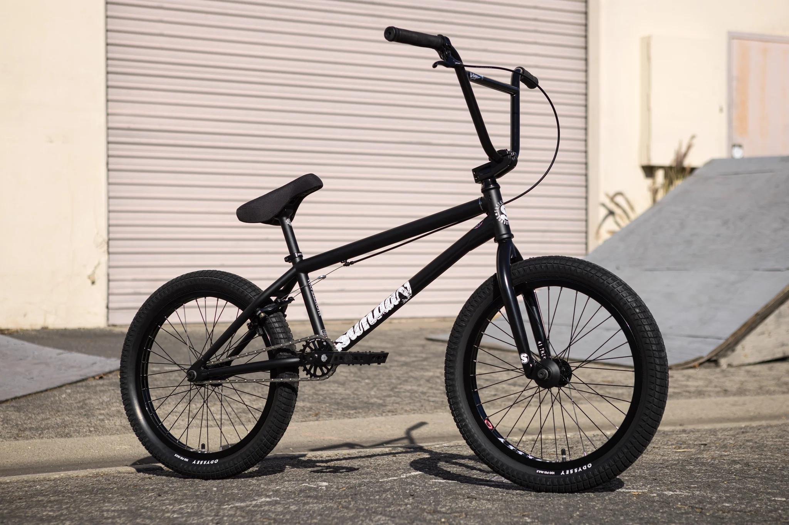

Aqui você encontra tudo sobre bicicletas radicais, manobras e história.
A BMX surgiu na Califórnia na década de 1970, inspirada nas corridas de motocross. Rapidamente se tornou um espetaculo, ganhando um publico enorme 